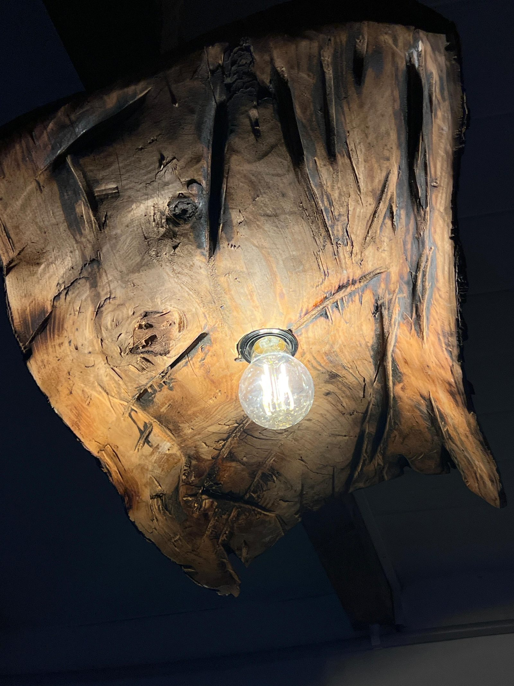
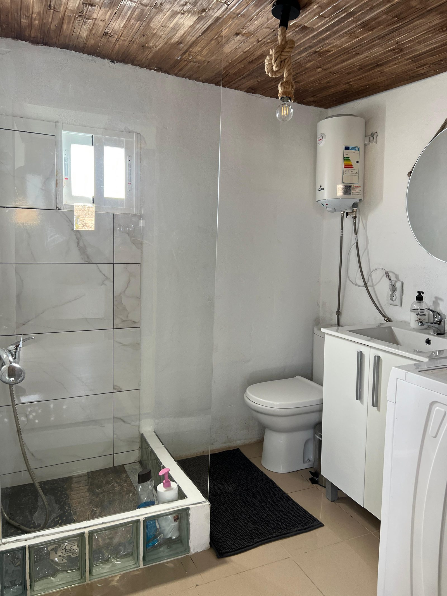
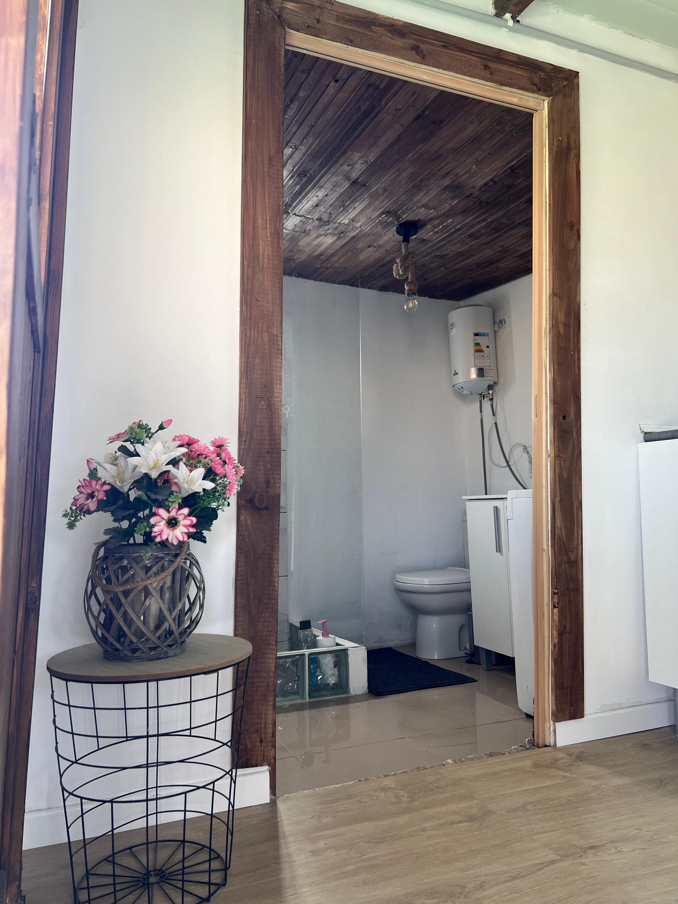
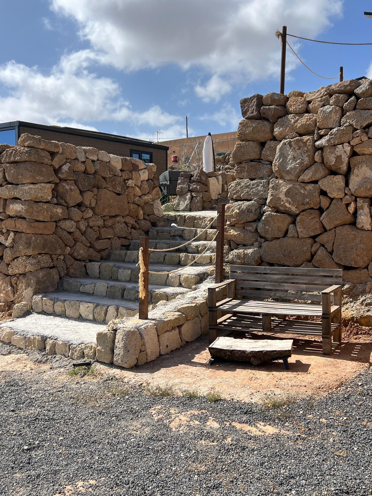
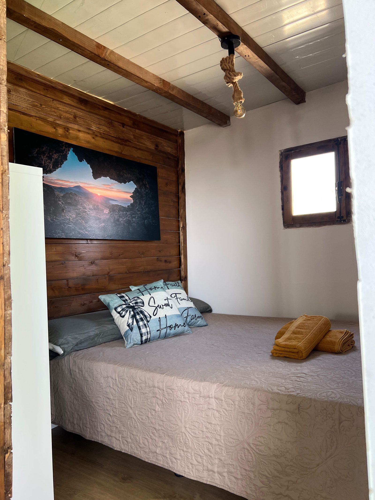

Immersa nelle colline di Chimiche, nella zona agricola di Granadilla de Abona, questa finca autentica racconta la Tenerife rurale che pochi turisti hanno il privilegio di conoscere. Circondata da vigneti storici e terrazze coltivate, offre un'esperienza di soggiorno genuina, lenta e profondamente legata alla terra.
L'architettura canariana tradizionale — muri in pietra lavica, travi in legno di pino canarino, cortile interno — crea un'atmosfera calda e senza tempo. Il ritmo e' quello della campagna: colazioni con frutta fresca, serate stellate, silenzio assoluto.
Possibilita' di degustare vini locali prodotti nelle vigne vicine, acquistare prodotti agricoli a chilometro zero e partecipare alla vita autentica del borgo di Chimiche.





La scelta ideale per chi vuole disconnettersi davvero, immergersi nella natura canariana autentica e vivere una Tenerife che esiste ancora lontana dai circuiti turistici.
Contattaci per disponibilita' e prezzi
💬 Contattaci su WhatsApp